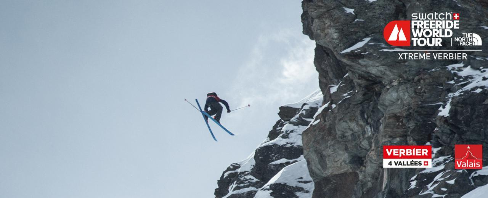
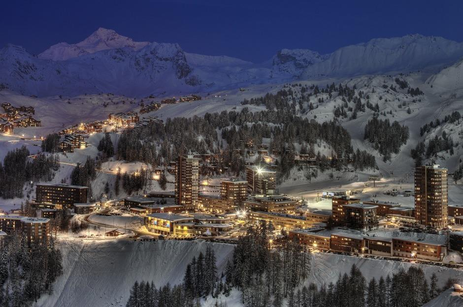

3 Valleys
Three Valleys Ski Resort was originally established in 1938 by British ski enthusiast Peter Lindsay, who built the first ropeway in the same year. Meribel is the geographical centre of the entire three canyons, with Courchevel and La Tania to the east and Val Thorens to the west. Meribel has beautiful "Chalet" style buildings surrounded by woods and a very festive atmosphere within the resort.
4 Valleys
Four Valleys Ski Resort It's the largest ski region in Switzerland, with 6 interconnected and unique ski resorts (Verbier, Bruson, La Tzoumaz, Nendaz, Veysonnaz, Thyon), 67 ropeways, and more than 410 kilometers of pistes. Plans for the Four Valleys Ski area were hatched in the mid-1970s, and the dream became a reality in 1983 with the completion of the Mont Fort gondola.
Gate of the Sun
The Portes du Soleil ski area, spanning France and Switzerland, offers over 650 km of slopes and 200 lifts, making it a skier's dream with diverse terrain and breathtaking views.
Matterhorn ski paradise
Located on the border between Switzerland and Italy, close to the Swiss town of Zermatt and the Italian town of Breuil-Cervinia, the Matterhorn peaks stand majestically between them, attracting worldwide attention and being a symbol of the Alps. Matterhorn ski paradise, centered on the Matterhorn Peak, is the highest ski region in Europe, with a maximum elevation of 3,883 meters by ropeway, overlooking the Alps. Matterhorn Ski Paradise is made up of two resorts, Zermatter-Matterhorn in Switzerland and Aosta Valley in Italy.

Milky way

Milky way stretches in the Alps on the border between Italy and France, It consists of five ski resorts in Piedmont, Italy (Claviere, Sansicario, Sauze d'Oulx, Pragelato, Sestriere) and Montgenevre in France. The Galaxy was also the site of the 2006 Winter Olympics in Turin, where most of the snow events (alpine skiing, freestyle skiing, snowmobiling) took place.
Paradiski
It is the "big MAC" of ski resorts, with an average of 2.5 million ski trips per winter. Modern resort facilities, 92 cable cars, a total of 225 km of pistes to cater for all levels of skiing, La Plani has 11 groups, the entire area a total of more than 53,000 beds. In addition, La Planade has plenty of wild snow areas to roam. La Planade was also an important venue for the 1992 Albertville Winter Olympics
